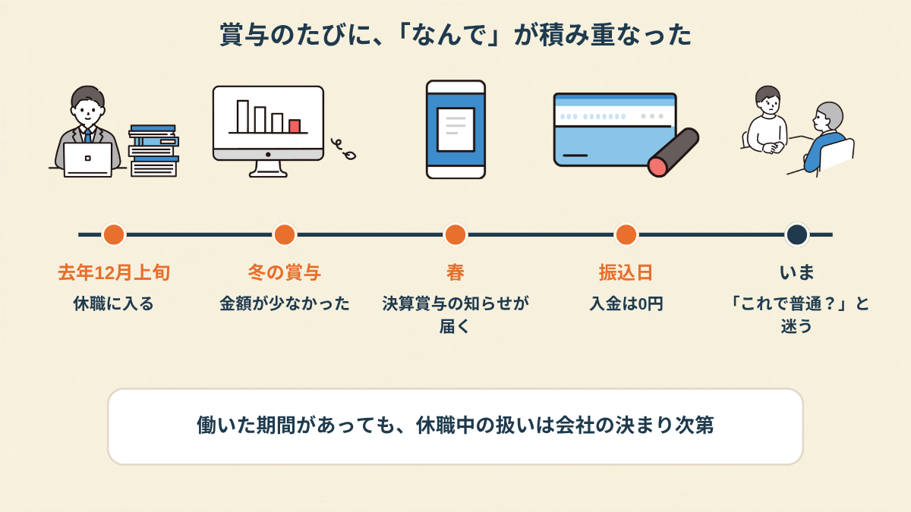
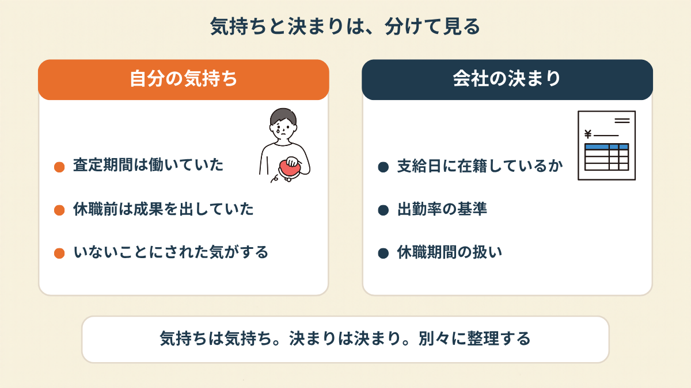
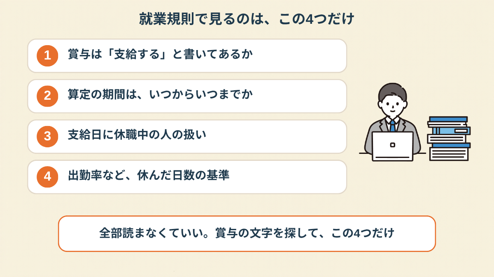
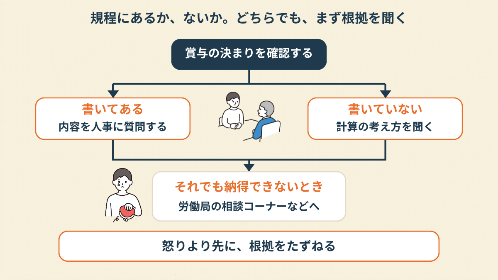
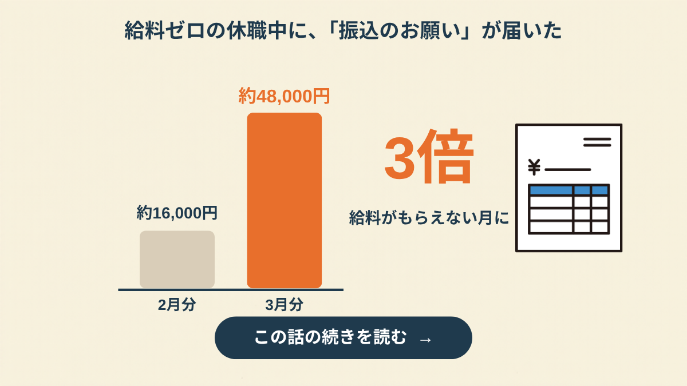
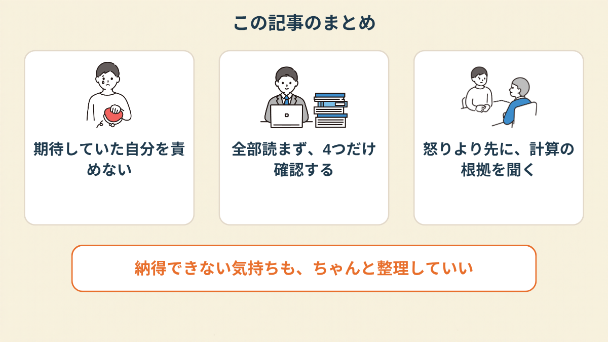

休職中の私にも、会社からその連絡が来ました。
振込日の朝、通帳を開いたら、その日の入金はありませんでした。
0円。1円も。
通帳を開いたら、賞与の欄はなかった
休職に入ったのは、去年の12月の上旬です。
それから4ヶ月ほどたった春に、決算賞与の知らせが来ました。
休職中の人にも、一応お知らせは回るらしい。
正直、ちょっと期待していました。
休職の前の期は、普通に働いていたので。
期の大半は、ちゃんと出社していたはず、と。
振込日の朝、スマホで通帳アプリを開く。
いつもの傷病手当金の入金は見えるのに、賞与らしい数字はどこにもない。
2回、更新しました。変わらなかった。

冬のボーナスも、減っていた
実は、前の冬のボーナスの時も、引っかかっていました。
休職に入ったのは、支給日の2週間くらい前。
査定期間はとっくに終わっていたはずなのに、振り込まれた金額は、明らかに少なかった。
そのときは「まあ、休んでるし」と自分に言い聞かせて、人事には何も聞きませんでした。
聞く元気もなかった、が正しいかもしれません。
でも、決算賞与で0円になって、はっきり思いました。
これ、2回目だ。
1回なら飲み込めたことが、2回目で急に飲み込めなくなったんですよね。
「お金のことで怒るのって、休んでる身で言うのは違うかなって。でも、通帳見た瞬間、胸のあたりがぎゅっとなって、そのまま1時間くらい動けなかった。金額っていうより、『いないことにされた』感じがしたんです」
「そういうものでしょ」と言われる気がした夜
その晩、ネットで「休職中 ボーナス 0円」と検索しました。
出てくる回答は、だいたい似ていました。
「ボーナスに共通のルールはない」「会社の規則ならそういうもの」。
理屈は分かります。
でも、理屈で分かることと、気持ちが納得することは別で。
画面を閉じてから、しばらくぼーっとしていました。


就業規則で、見るところを4つに絞った
翌日、就業規則を探しました。
総務のポータルに、PDFで置いてあった。
開いたら、200ページ近くあって、一瞬で閉じかけました。
全部読むのは無理なので、「賞与」の文字だけ検索して、見る場所を絞りました。
ボーナスの決まりは、会社の就業規則や賞与規程に書かれていることが多いとされています（2026年10月時点の情報です）。

見つけたのは、「支給日に在籍している者」「出勤状況を考慮する」という言い回し。
休職がどう数えられるのかは、書いていませんでした。
書いていない、というのも、ひとつの発見でした。
「規程に『休職者は対象外』って書いてあって、悔しいけど、ちょっとだけスッキリしました。分からないまま怒ってるより、書いてあるのを読んで怒るほうが、まだ楽でした」
人事に聞くなら、「計算の根拠」を教えてもらう
読んでも分からない部分は、人事に聞くしかない。
でも、いきなり「なんで0円なんですか」と聞く自信はなくて。
聞き方を変えて、「どういう計算になっているか、教えてください」にしました。

メールは、3行にしました。
「休職前の期の働きが、賞与にどう反映されているか、計算の考え方を教えてもらえますか」。
それだけ。
返事が来るまでの数日は、正直、落ち着きませんでした。
返ってきた内容で納得できたかというと、半分くらい。
でも、「聞いた」という事実が、自分の中では大きかったです。

給料ゼロの休職中に届いた「振込のお願い」メールの話 →
この記事に、聞いてみたいことはありますか？
「自分の場合はどうなんだろう」と思ったことを、気軽に書いてみてください。いただいた質問は個別にお返事したうえで、匿名で記事にすることがあります。